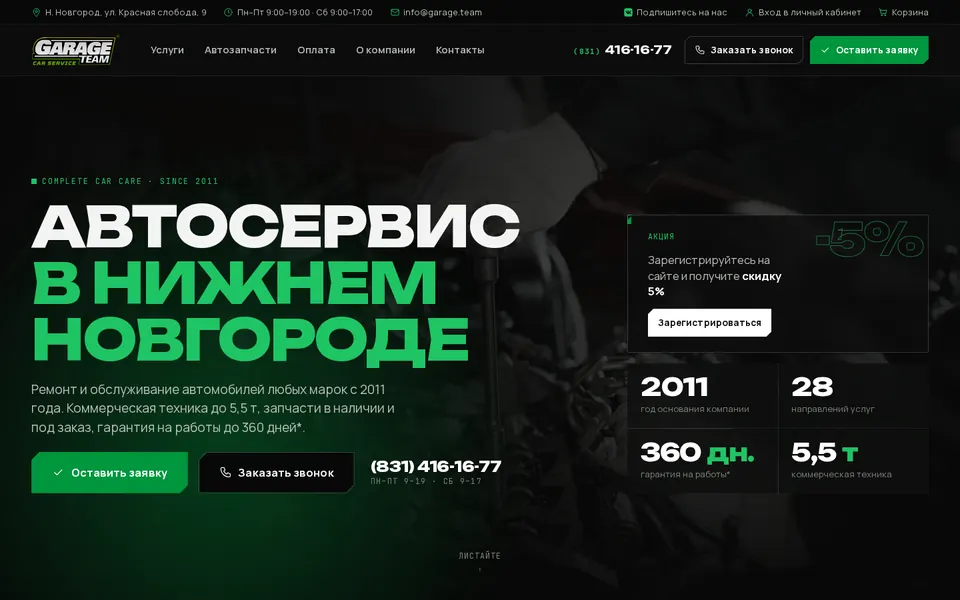
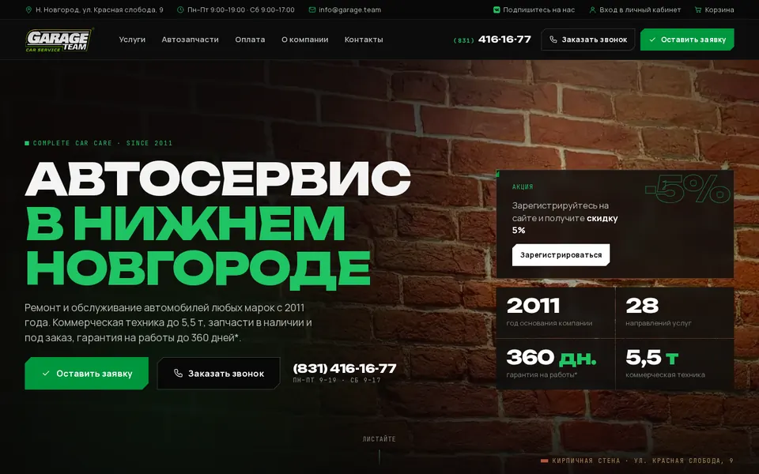
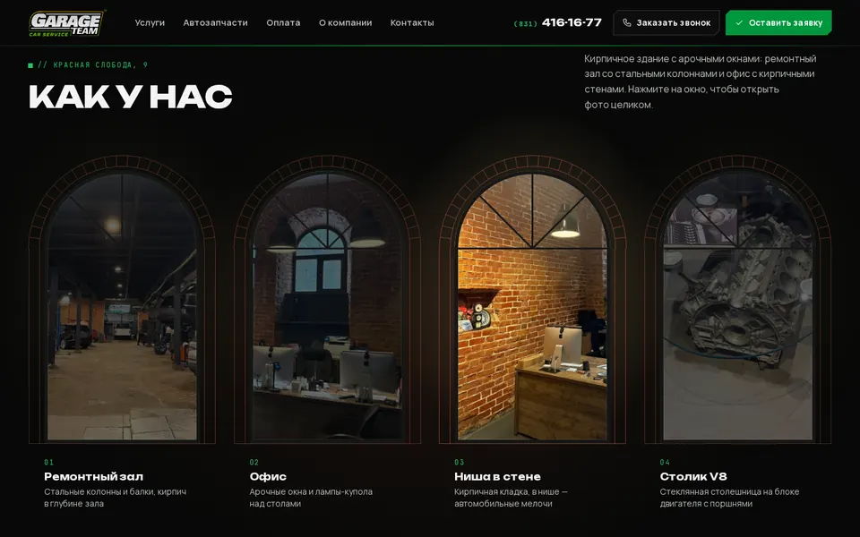
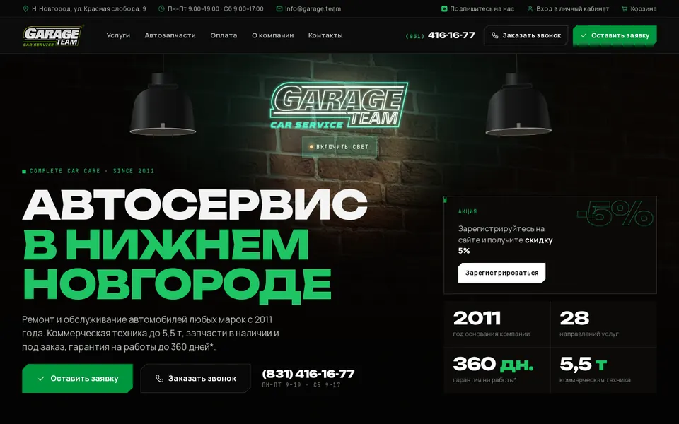
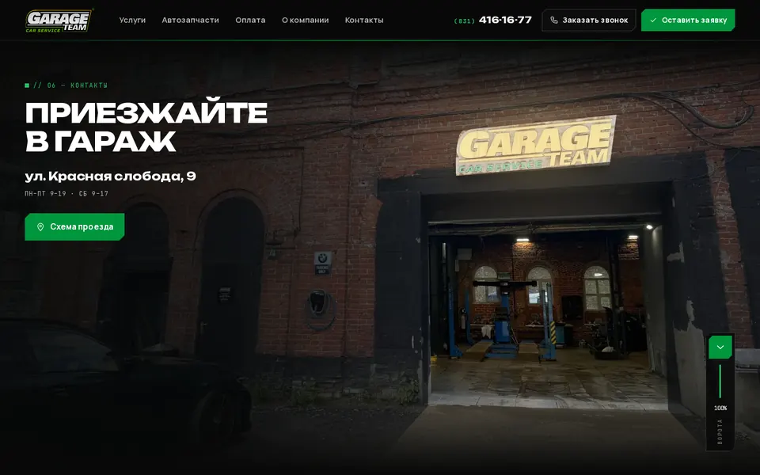
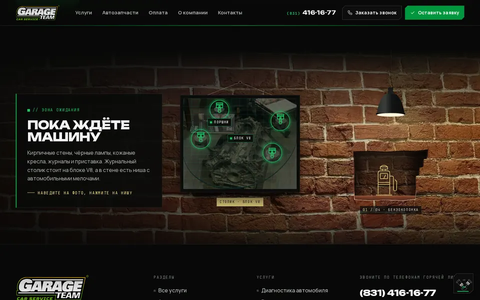

// 00
Как сейчас
Текущая версия с новыми текстами услуг, без изменений в оформлении. Чтобы было с чем сравнивать.
garage.team · черновики оформления
Два набора: оформление по настоящим фото «Гаража» и плюшки — полезные интерактивные штуки для клиентов. Каждый вариант — полная копия сайта, по ней можно ходить как по обычному сайту. Для сравнения первой идёт текущая версия без изменений.
// 01 — оформление
Кирпич, арки, лампы, ворота — оформление по настоящим фото «Гаража».

Текущая версия с новыми текстами услуг, без изменений в оформлении. Чтобы было с чем сравнивать.

Спокойный вариант без игрушек. На первом экране настоящая кирпичная стена в тёплом свете лампы, блок «Почему выбирают Гараж» уложен как кирпичная кладка, директор — в арочном окне под кирпичным сводом.
Что попробоватьПосмотреть первый экран, навести курсор на карточки преимуществ, долистать до директора.

Новый блок «Как у нас»: цех, офис, ниша и столик на V8 в арочных окнах с чёрными переплётами. Окна зажигаются по очереди. Та же арка у фото директора и у фасада в контактах.
Что попробоватьПоводить курсором по окнам, кликнуть по окну. На телефоне — пролистать окна пальцем.

На первом экране кирпичная стена и две чёрные лампы-купола, как в офисе. Лампы можно выключать. Если погасить обе, загорается неоновая вывеска GARAGE TEAM, как в конце цеха.
Что попробоватьНажать на обе лампы — загорится вывеска. Любая лампа включает свет обратно.

Сцена «Приезжайте в Гараж» на фото вашего фасада: вывеска загорается, при прокрутке ворота поднимаются, и вид переходит внутрь цеха. Меню и окно «Заказать звонок» открываются как ставня.
Что попробоватьМедленно прокрутить сцену или нажать зелёную кнопку на «пульте» у ворот. На телефоне открыть меню.

Мелкие находки. Блок «Пока ждёте машину» на кирпичной стене: фото столика на V8 и ниша с вещицами, как у вас в офисе. В углу при прокрутке работает маленький V8, в кнопке «Оставить заявку» — тахометр.
Что попробоватьНавести на фото столика, нажимать на нишу. Покрутить страницу и посмотреть на V8 в углу.
// 02 — плюшки
Полезные интерактивные штуки без фото: помогают клиенту и приводят к заявке. Каждая — отдельная копия сайта.
Чек-лист из 10 пунктов: шины, аккумулятор, антифриз, омывайка и другое. Шкала показывает готовность, отметки запоминаются. Неотмеченные пункты одной кнопкой уходят в заявку.
Что попробоватьОтметить несколько пунктов, переключить «Бензин / Дизель», нажать «Записаться на подготовку к зиме».
Живой статус по московскому времени в шапке, в контактах и в мобильном меню: «Открыто · до 19:00», «Скоро закрываемся», «Закрыто · до понедельника». В контактах — неделя с сегодняшним днём и кнопки «Маршрут», «Скопировать адрес», «Сохранить в контакты».
Что попробоватьПосмотреть на шапку, нажать «Сохранить в контакты» на телефоне, открыть меню.
Приборная панель с 16 контрольными лампами. При появлении на экране все лампы загораются и гаснут, как при повороте ключа. Нажали на значок — что он значит, насколько это срочно, что делать, ссылки на услуги и кнопка «Записаться на диагностику».
Что попробоватьДождаться проверки ламп, нажать на красную маслёнку и на жёлтый Check Engine, потом «Записаться на диагностику».